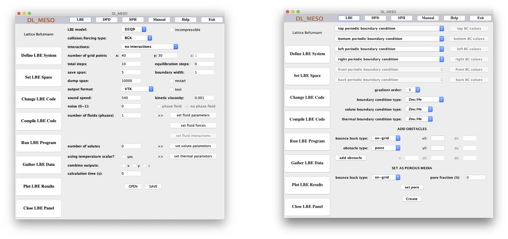

DL_MESO Graphical User Interface¶
DL_MESO includes a platform-independent graphical user interface (GUI) programmed in Java. While not compulsory for running LBE or DPD simulations, it can make using DL_MESO_LBE and DL_MESO_DPD easier by helping with
Constructing most of the required input files
Edit, compile and launch codes
Launch utilities and other software for analysis and visualisation
There is normally no need to compile the source code for the GUI, as a pre-compiled JAR (Java archive) file comes with DL_MESO. Only a Java Runtime Environment (JRE) needs to be installed on your machine to be able to run the GUI, which can be launched from the dl_meso/WORK directory with the command:
java -jar ../JAVA/GUI.jar
or alternatively using the rungui script in the same directory.

Some sections of the GUI require the LBE and DPD utilities to be compiled first using the instructions shown in the DL_MESO Ready, get set, go guide.
The welcome screen (shown above) gives a top menu with some options:
LBE opens a side menu to setup and run DL_MESO_LBE simulations
DPD opens a side menu to setup and run DL_MESO_DPD simulations
SPH currently does not work (but is a placeholder for a future Smooth Particle Mesh code)
Manual attempts to open
The DL_MESO User Manualin Adobe Acrobat ReaderHelp prompts the user to visit the DL_MESO website
Exit closes down the GUI
Each of the side menus for the LBE and DPD options includes buttons to show windows for the various tasks involved in setting up and running simulations.
{kind=link}
The Define LBE System window creates a lbin.sys file for DL_MESO_LBE simulation settings. It includes pull-down, tick and text boxes to specify options and values, as well as buttons to open up pop-up windows to specify fluid, interaction, solute and thermal properties. The OPEN button reads in any pre-existing lbin.sys file in the directory where the GUI was launched, and SAVE writes the information in this window to the file.
The Set LBE Space window creates a lbin.spa file to specify boundary conditions for a DL_MESO_LBE simulation. It includes pull-down boxes for setting boundary conditions around the outside of the simulation box with buttons to specify e.g. velocities or fluid densities at those boundaries if required, as well as options to add solid obstacles and create a randomised porous medium. The Create button writes a new lbin.spa file listing all of the boundary grid points and their boundary codes.
Note
The Define LBE System needs to be completed first before specifying boundary conditions, as some simulation properties (e.g. grid size) are required.
{kind=link}
The Define DPD System window creates a CONTROL file for DL_MESO_DPD simulation settings. It includes pull-down, tick and text boxes to specify options and values, as well as buttons to open up pop-up windows to specify thermostat, barostat, electrostatic and surface properties. The OPEN button reads in any pre-existing CONTROL file in the directory where the GUI was launched, and SAVE writes the information in this window to the file.
The Set DPD Interactions window creates a FIELD file to specify particle species and interactions for a DL_MESO_DPD simulation. It includes a spinner for the number of particle species and buttons to specify details for the species and interactions between pairs of species, as well as one to launch the molecule.exe utility to create molecule data and another (with a pulldown box) to specify external force fields. The OPEN button reads in any pre-existing FIELD file in the directory where the GUI was launched, and SAVE writes the information in this window to the file.